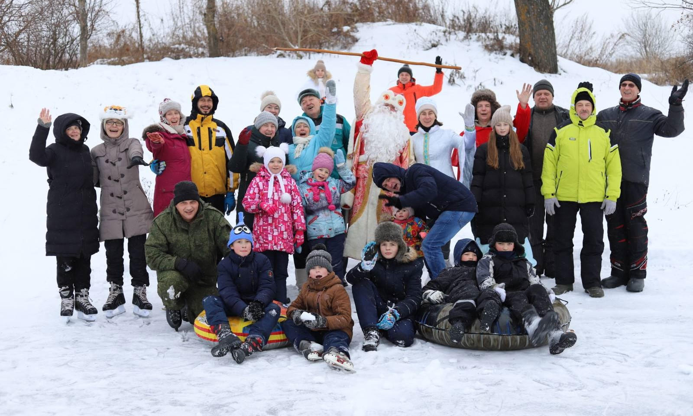
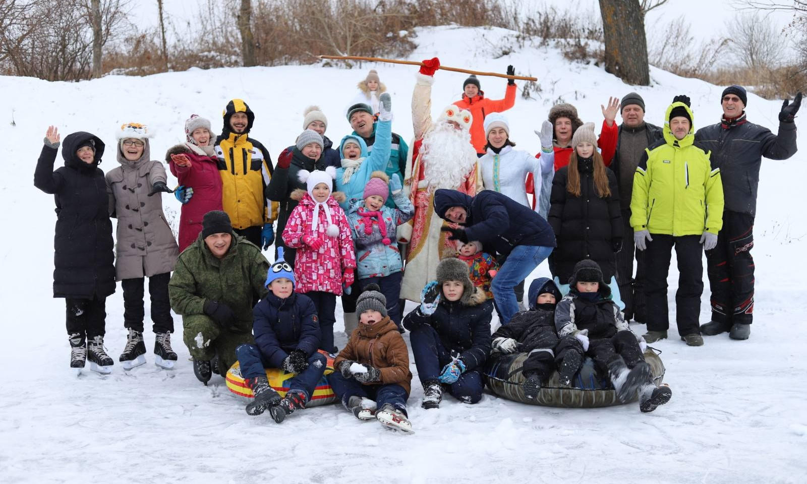

Люди Подвязья
Мы — сообщество жителей села #Подвязье
Мы любим свою деревню и не можем сидеть, сложа руки, а поэтому делаем все, что от нас зависит, чтобы наше
село процветало! Развиваем и благоустраиваем территорию, возрождаем традиции, делаем сельскую жизнь
интересной и современной, а самое главное - объединяемся на общие дела!
А в общем и целом мы пропагандируем сельский образ жизни, ценности и традиции села!
Живем под вязами! Любим творчество! Развиваем территорию! Вспоминаем прошлое и вместе строим будущее!
Присоединяйтесь к нам!

 

Горбачева Вера Александровна
Тётя Вера — энерджайзер во всех делах и событиях в Подвязье. Будь то праздник или субботник,
она всегда в первых рядах. Равняемся на неё. А еще, тётя Вера знатный цветовод и огородник,
это у нее растут белые огурцы и цветы всех разновидностей. Она и модный ландшафтный
дизайнер, ловим ее лайфхаки по оформлению территории старинными чугунками, галошами и
сапогами и другой утварью, в этом отлично растёт и смотрится зеленая растительность!
Юрий Сергеев
Дядя Юра Сергеев, участник всех сельских движух, душа компании, предводитель местного
дворянства, ой крестьянства 😅 ну в общем, наш человек!)
Ершова Тамара Васильевна
Хранитель традиций села, участник всех мероприятий. Тетя Тамара одна их тех, кто помог найти
фундамент старинной Васильевской Церкви в Подвязье, вместе с подругами — соседками ухаживает
за могилой священника, имя которого неизвестно. А еще она уже 40 лет культивирует местный
«гигантский» сорт зеленого горошка и в огороде у нее ни одной сорной травинки!
Лаврентьева Ирина
Активист села, одна из организаторов всех активностей, которые проходят в селе с участием
жителей
Елена Черновская
Ценнейший активист села, добрый друг, хранительница традиций и хозяйка нашего сельского
самовара - это все Елена!
Сергеева Наталья
Спортсменка, комсомолка и просто красавица! А еще и цветочная фея и повелительница петуниек.
Лаврентьев Алексей
Дежурный по селу. Со своей семьей ведет хозяйство, строит дом и участвует в развитии села.
Исаев Пётр Васильевич
Всегда участвует во всех мероприятиях села, интересный рассказчик историй из жизни Подвязья
Герасимов Павел Валерьевич
Пал Валерич.. «Кулибин»... Личность всесторонне развитая и сказать, что Павел может многое -
это не сказать ничего)) порой кажется, что он может все!
Малафеева Вера
Творческий человек, оформитель торжественных мероприятий и праздничных столов, мастер по
карвингу, то есть резьбе по овощам и фруктам и составлению шедевральных фруктовых и овощных
композиций и даже мыловар! Украшение столов на праздниках в #Подвязье и замечательные
мастер-классы по карвингу, флористике и другому творчеству - это её золотых рук дело!
Юрьева Наталья
Помнит свое беззаботное счастливое детство в родном селе, активный участник всех событий и
«штатный» фотограф Подвязья
Юрьев Владислав
Фермер
Две сестры!
Лилия Михайловна Теплякова и Елена Михайловна Хасангалина, в девичестве Зуевы!
Андриянычев Николай Александрович
Старожил села, знает всё и даже больше! Его отец — дядя Саша, долгое время был старостой
села, а мама — тетя Соня заведовала нашим сельским магазином!
Комарова Тамара Михайловна
Цветочная фея Подвязья и активный участник всех событий. А еще, Тамара Михайловна делится с нами
интересными воспоминаниями о съемках фильма «Обрыв» в Подвязье
Малишевская Татьяна Александровна
Кладезь историй и воспоминаний о жизни Подвязья
Павлычева Любовь Евгеньевна
Рассказала нам интересную историю о своем прадеде, купце 1 гильдии Сорокине Петре
Андреевиче, жившем в Подвязье
Жиркова Надежда, Чатаева Надежда, Максимова Лилия
Жиркова Надежда, Чатаева Надежда, Максимова Лилия